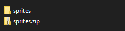

In Scratch sind zwar einige Bilder eingebaut, die man für sein eigenes Spiel nutzen kann, doch eigene Bilder verwenden gibt einem vielzählige Möglichkeiten. Um das zu Testen kannst du alle Bilder des Peck-Mähn-Spiels herunterladen. Klicke dazu hier um den Download zu starten.
Damit du die Bilder nutzen kannst, musst du sie zunächst entpacken. Gehe in deinen Downloads-Ordner und finde die gerade geladene Datei sprites.zip
Klicke Sie mit der rechten Maustaste an, wähle Alle Extrahieren und bestätige inm aufspringenden Fenster mit einem Klick auf Extrahieren.
1. Unten links in der Taskleiste auf das Ordner-Symbol klicken 2. Downloads-Ordner öffnen, z.B. links oben im Schnellzugriff 3. Rechtsklick auf die Datei, dann auf Alle Extrahieren 4. Nichts im neuen Fenster verändern, auf Extrahieren klicken. Nun hast du den Ordner entpackt. Die .zip-Datei brauchen wir nun nicht mehr, die kannst du auch löschen.

Schritt für Schritt mit Bildern
Um mit dem Programmieren in Scrtach loslegen zu können müssen wir natürlich Scratch noch öffnen. Dazu kannst du einfach hier klicken um die Seite direkt zu öffen oder in einem neuen Tab scratch.mit.edu eintippen.
Auf der Seite gehst du auf Beginne mit dem Erstellen oder klickst oben in der Navigationsleiste auf Entwickeln.
Video: Startknopf finden
Soweit fertig? Dann klicken unten rechts zu nächsten Seite weiter!